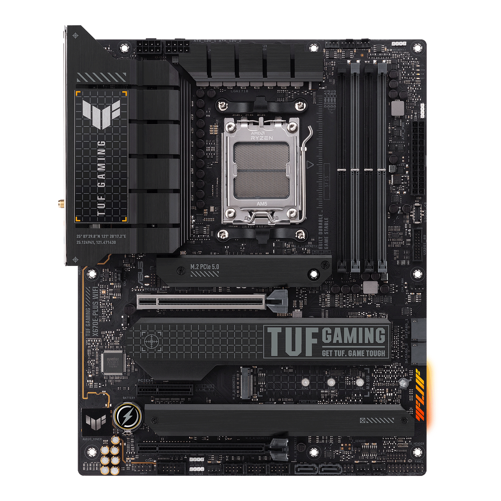

← Listeye Dön
🌐 Resmi Destek

ASUS TUF Gaming X670E-PLUS
Dayanıklı tasarım, PCIe 5.0, DDR5 ve WiFi 6E desteği ile Ryzen 7000 için optimize.
Özellik
Değer
Soket
AM5
Chipset
AMD X670E
RAM
4x DDR5 Slot
PCIe
PCIe 5.0 x16